🔐 Infrastructure PKI – Projet BESAFE
Cette page présente l’architecture de la PKI interne BESAFE, son rôle, les composants déployés et les bonnes pratiques suivies.
⚙️ Détails techniques
La PKI constitue la racine de confiance du système d’information BESAFE.
Elle garantit :
| Domaine | Usage | Exemples |
|---|---|---|
| Infrastructure | Sécurisation des consoles et services | ESXi, vCenter, Stormshield, Switchs |
| Active Directory | LDAPS, authentification forte | Contrôleurs de domaine, serveurs membres |
| Applications internes | HTTPS interne, API | GLPI, Nextcloud, Vaultwarden, Wiki.js |
| Accès distant | VPN SSL & IPSec (certificats serveur) | fw01.besafe.local |
| Sécurité | Signature / chiffrement | Wazuh, journaux signés |
🏗️ Étape 1 : Architecture PKI BESAFE
Architecture PKI BESAFE
L’infrastructure PKI de BESAFE suit un modèle à deux niveaux (2-Tier) :
• Une autorité racine hors-ligne (RootCA) totalement isolée
• Deux autorités intermédiaires SubCA dédiées aux besoins serveurs & équipements
Ce design garantit un haut niveau de sécurité tout en permettant une exploitation quotidienne simple.
📸 Schéma PKI 2-Tier
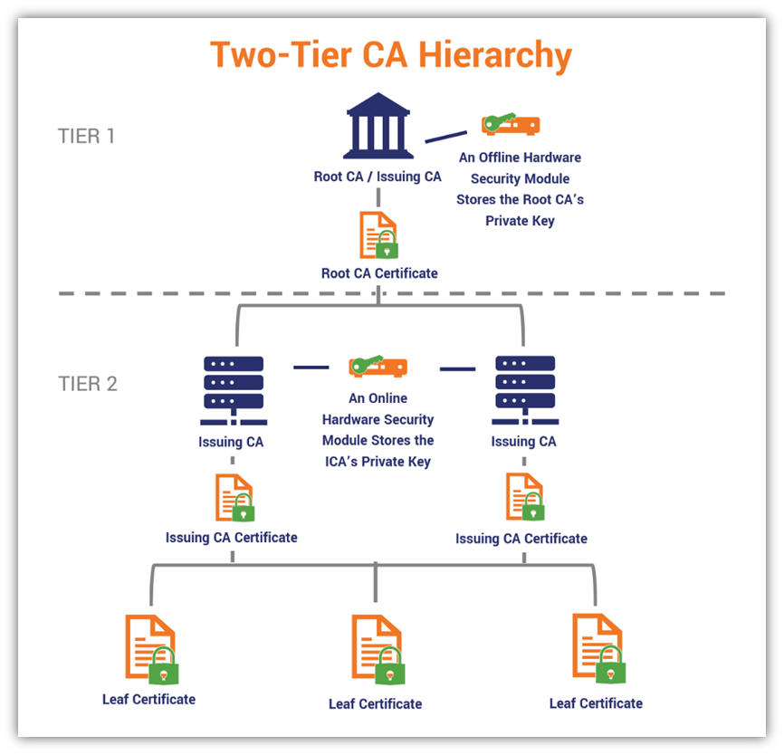
🔐 Composants de la PKI
| Rôle | Nom | OS / Type | État | Description |
|---|---|---|---|---|
| Autorité racine (Tier 0) | NTE-ROOTCA-001 | Windows Server Core | Offline | Autorité suprême. Ne signe que les SubCAs. Jamais en ligne. |
| Autorité intermédiaire – Serveurs (Tier 1/2) | NTE-SUBCA-001 | Windows Server | Online | Délivre les certificats serveur (HTTPS, LDAPS, appliances, ESXi…). |
| Autorité intermédiaire – Applicatifs (Tier 1/2) | NTE-SUBCA-002 | Windows Server | Online | Délivre les certificats applicatifs (NPM, Nextcloud, Vaultwarden…). |
| Répondeur OCSP / AIA | (Optionnel futur) | Windows Server | Online | Publication des listes de révocation & endpoint OCSP. |
🌳 Vue d’ensemble de la hiérarchie
Le modèle 2-Tier apporte :
- RootCA protégée → niveau T0, jamais jointe au domaine, stockage offline
- SubCAs en ligne → délivrent les certificats au quotidien
- Séparation usage serveur / applicatif
- Revocation lists (CRL) publiées automatiquement
- Compatibilité avec l’écosystème Windows, ESXi, Stormshield, Linux
🖼️ Schéma PKI – BESAFE
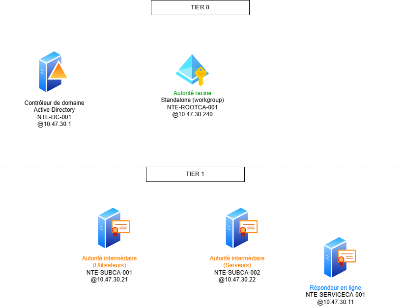
🔗 Étape 2 : Intégration avec Active Directory & Modèle de Tiering
La PKI BESAFE applique strictement le modèle Microsoft Enterprise PKI + Tiering AD.
L’objectif : garantir une séparation totale des privilèges, une émission contrôlée des certificats et une surface d’attaque minimale.
🧩 1. Positionnement des rôles PKI dans le Tiering
🛑 Tier 0 – Racine de confiance
| Composant | Tier | Pourquoi |
|---|---|---|
| RootCA (offline) | T0 | Élément le plus critique. Compromission = PKI entière compromise. |
👉 Jamais jointe au domaine, jamais en ligne, jamais utilisée en production.
Seulement pour :
- signer les SubCAs,
- publier les CRL/AIA,
- renouveler sa propre clé (rare).
🔐 Tier 1/2 – SubCA en production
| Composant | Tier | Pourquoi |
|---|---|---|
| SubCA Serveurs (NTE-SUBCA-001) | T12 | Émet les certificats systèmes (ESXi, FW, AD…). |
| SubCA Applicatifs (NTE-SUBCA-002) | T12 | Émet les certificats applicatifs (GLPI, NPM, Vault…). |
➡️ Les SubCAs sont jointes au domaine pour :
- publier automatiquement dans AD les CRL,
- distribuer les AIA,
- gérer les modèles de certificats (Certificate Templates).
🧩 2. Intégration PKI ↔ Active Directory
📌 Les SubCAs sont intégrées à AD
Cela permet automatiquement :
- Publication des CRL dans
CN=CDP,CN=Public Key Services,CN=Services,CN=Configuration,DC=besafe,DC=local - Publication des AIA dans
CN=AIA, ... - Distribution automatique via GPO → Autorités de certification approuvées
- Inscription automatique des modèles de certificats dans Certificate Templates
- Validation transparente des certificats pour les machines du domaine
🧩 3. Autorités approuvées & GPO
🔒 GPO appliquées (automatique via AD DS)
| Objet | Rôle |
|---|---|
| Trusted Root Certification Authorities | Ajoute la RootCA BESAFE |
| Intermediate Certification Authorities | Ajoute SUBCA-001 & SUBCA-002 |
| Client Auto-Enrollment | Les machines de domaine génèrent automatiquement leurs certificats |
➡️ Les serveurs, ESXi, appliances réseau utilisent SUBCA-001.
➡️ Les applications web (Nextcloud, NPM, Vaultwarden…) utilisent SUBCA-002.
📄 Étape 3 : Demande, installation et export d’un certificat serveur (PFX)
Cette étape décrit comment créer un certificat Web Server signé par la PKI interne. L’objectif est d’assurer une authentification TLS fiable basée sur la PKI BESAFE.
🔹 4.1. Ouverture du magasin de certificats « Ordinateur local »
Le certificat doit être installé dans le magasin de l’ordinateur, et non dans le profil utilisateur.
📸 Capture – Lancement de la console certlm.msc
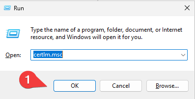
🔹 4.2. Demande d’un certificat Web Server auprès de la SubCA
L’enrôlement se fait via l’autorité d’inscription Active Directory.
Le modèle utilisé est Web Server, modifié précédemment dans la configuration PKI (SAN obligatoire).
📸 Capture – Ouverture du magasin Personnel
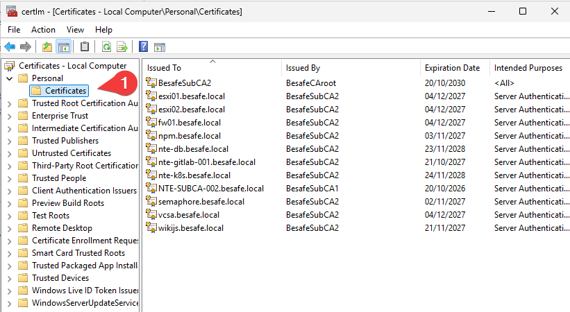
📸 Capture – Démarrer l’assistant d’inscription
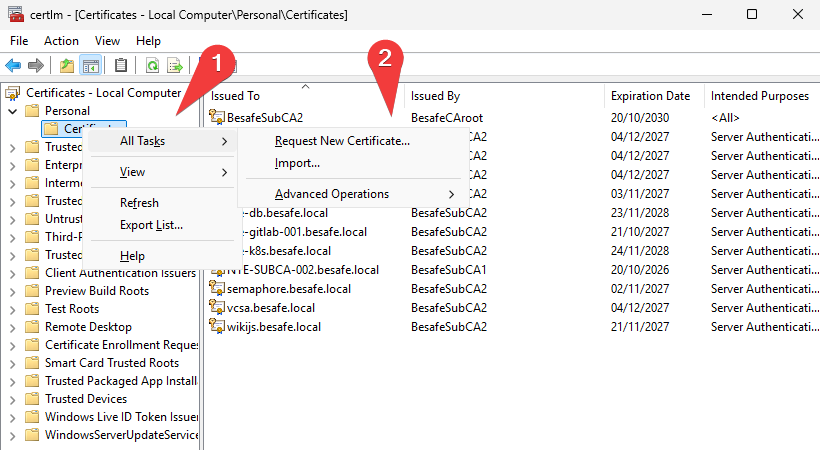
📸 Capture – Écran “Before you begin”
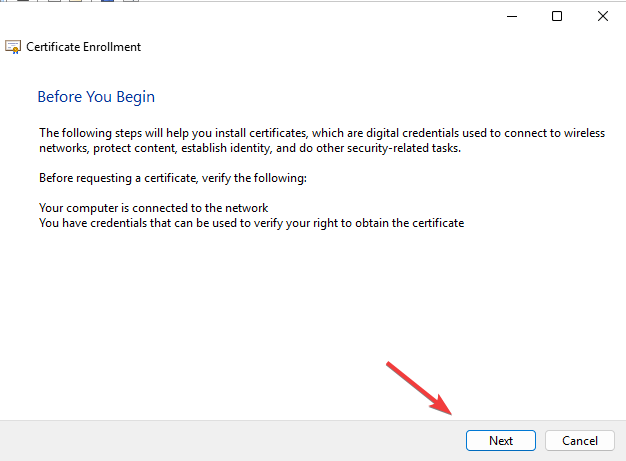
📸 Capture – Choix de la stratégie d’inscription
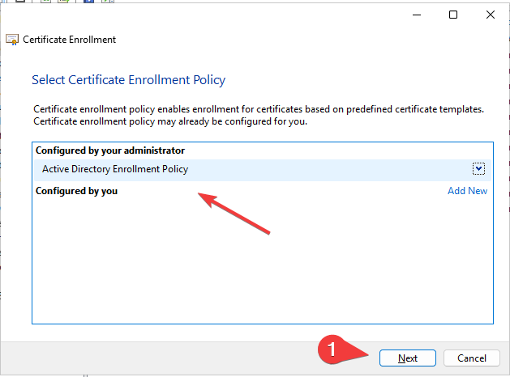
Ici, on utilise l’inscription basée sur Active Directory → la SubCA valide automatiquement le certificat.
📸 Capture – Sélection du modèle « Web Server »
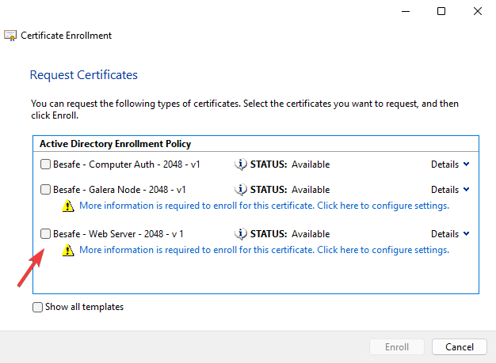
🔹 4.3. Définir le CN et les SAN du certificat
Un certificat serveur doit contenir :
- CN (Common Name) = Nom principal du service (ex :
npm.besafe.local) - SAN (Subject Alternative Name) obligatoire
- FQDN principal
- Alias internes
- Nom DNS du service
📸 Capture – Propriétés avant configuration
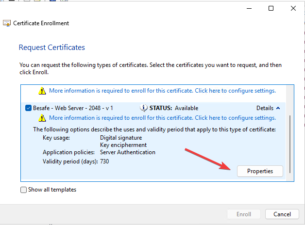
📸 Capture – Ajout du CN + SAN
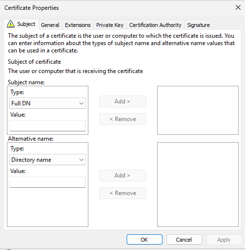
📸 Capture – Validation des propriétés
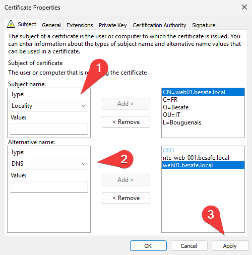
🔹 4.4. Enrôlement et installation du certificat
📸 Capture – Lancer l’enrôlement
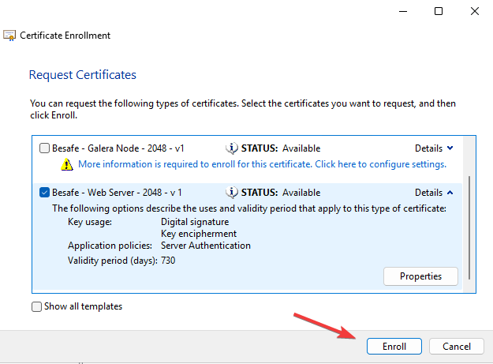
📸 Capture – Certificat obtenu
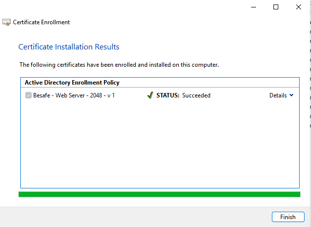
Le certificat apparaît maintenant dans Ordinateur local → Personnel → Certificats.
📸 Capture – Vue dans le magasin local
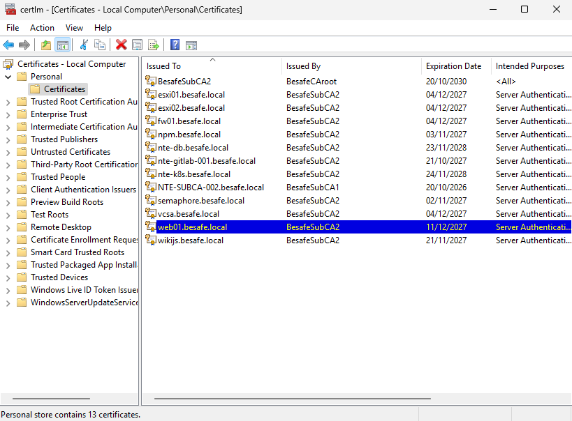
🔹 4.5. Export du certificat au format PFX (clé privée incluse)
📸 Capture – Démarrer l’export
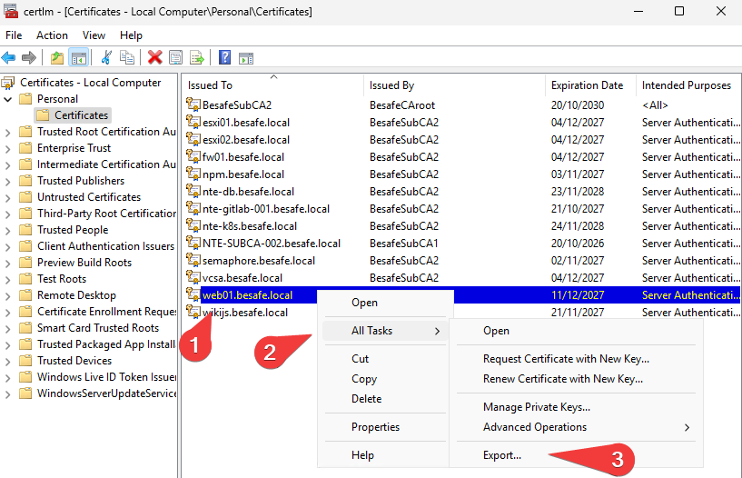
📸 Capture – Inclure la clé privée
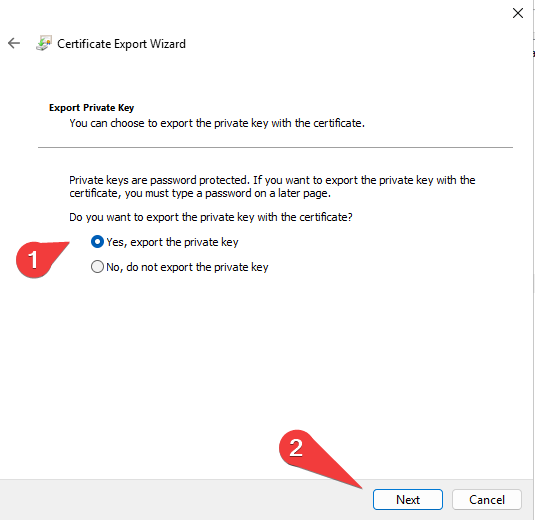
👉 Sélection obligatoire pour obtenir un fichier PFX.
📸 Capture – Sélection du format PFX
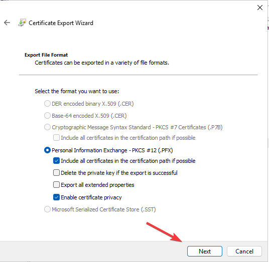
📸 Capture – Protection du fichier
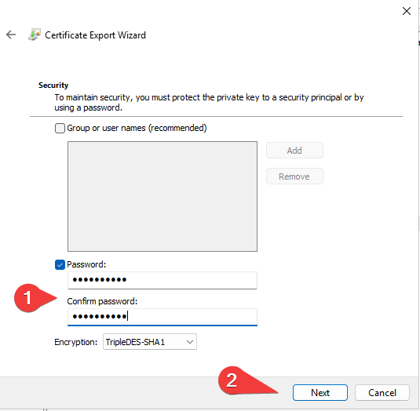
Le mot de passe protège la clé privée dans le PFX.
Sans mot de passe → rejeté par la plupart des équipements.
📸 Capture – Sélection du chemin d’export
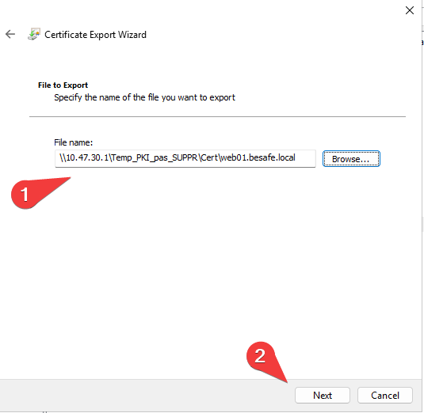
🧩 Résumé des étapes
| Étape | Objectif | Résultat attendu |
|---|---|---|
| 1️⃣ Architecture PKI BESAFE | Définir la structure RootCA / SubCA | Modèle PKI 2-tiers opérationnel |
| 2️⃣ Intégration AD & Tiering | Structurer les rôles PKI selon T0/T12 | Séparation claire des privilèges |
| 3️⃣ Certificat serveur (PFX) | Génération d’un certificat complet (clé privée + chaîne) | Certificat .PFX prêt pour import serveur |
🔗 Liens utiles
Documentation officielle Microsoft AD CS